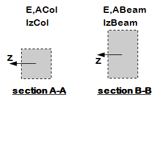
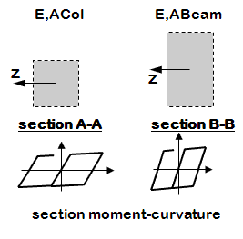
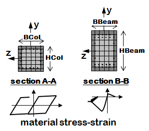
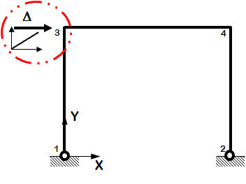
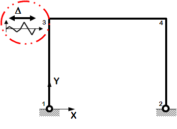
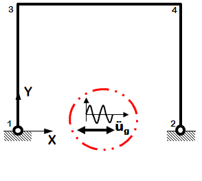
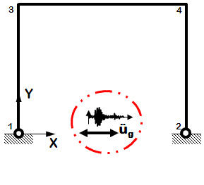
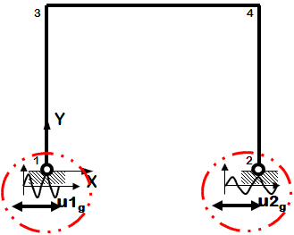
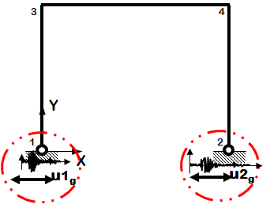
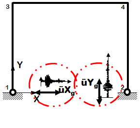

Introduction
This is a great example!
To all the demonstrations that Example 3 has done, Example 4 adds the use of previously-defined Tcl procedures (a procedure is a Tcl command that is created by the proc command) or scripts.
This example also introduces new kinds of static and dynamic analyses.
Input
Model Building
The following tasks are performed when building the model
- define units
- define model
- define recorders for output
- define & apply gravity
Elastic Element

Files
Notes
- Effective axial and flexural stiffnesses are defined at the element level
- elasticBeamColumn elements
|
|
Distributed Plasticity Element, Uniaxial Section

Files
Notes
- Axial and flexural stiffnesses/strength are defined independently at the section level
- uniaxial inelastic section (moment-curvature)
- nonlinear beam-column elements
|
|
Distributed Plasticity Element, Fiber Section

Files
Notes
- The section is broken down into fibers where uniaxial materials are defined independently.
- The program calculates flexural and axial stiffnesses/strength by integrating strains across the section.
- fiber section
- nonlinear beam-column elements
|
|
Lateral-Load Analysis
The following tasks are performed in the analysis
- define lateral-load parameters
- analyze
Static
Static Pushover

Files
Notes
- One-directional monotonic displacement-controlled static loading
|
Static Reversed Cyclic

Files
Notes
- One-directional displacement-controlled static loading
- Displacement cycles are imposed in positive and negative direction
|
|
Dynamic EQ Ground Motion
Dynamic Uniform Sine-Wave Ground Motion

Files
Notes
- Sine-wave acceleration input
- Same acceleration input at all nodes restrained in specified direction
|
Dynamic Uniform Earthquake Ground Motion (typical)

Files
Notes
- Earthquake (from file) acceleration input
- Same acceleration input at all nodes restrained in specified direction
|
Dynamic Multiple-Support Sine-Wave Ground Motion

Files
Notes
- Sine-wave displacement input
- Different displacements are specified at particular nodes in specified directions
|
Dynamic Multiple-Support Earthquake Ground Motion

Files
Notes
- Earthquake (from file) displacement input
- Different displacements are specified at particular nodes in specified directions
|
Dynamic Bidirectional Earthquake Ground Motion (typical)

Files
Notes
- Earthquake (from file) acceleration input
- Different ground motion in two directions
- Same acceleration input at all nodes restrained in specified direction
|
|
Run
The model and analysis combinations for this example are numerous. The following are an small subset, for demonstration purposes:
- To run Elastic Mode, Static Pushover Analysis:
puts " -------------Elastic Model -------------"
puts " -------------Static Pushover Analysis -------------"
source Ex4.Portal2D.build.ElasticElement.tcl
source Ex4.Portal2D.analyze.Static.Push.tcl
- To run Uniaxial Inelastic Section, Nonlinear Model, Uniform Earthquake Excitation
puts " -------------Uniaxial Inelastic Section, Nonlinear Model -------------"
puts " -------------Uniform Earthquake Excitation -------------"
source Ex4.Portal2D.build.InelasticSection.tcl
source Ex4.Portal2D.analyze.Dynamic.EQ.Uniform.tcl
- To run Uniaxial Inelastic Material, Fiber Section, Nonlinear Model, Dynamic Bidirectional Earthquake Ground Motion
puts " -------------Uniaxial Inelastic Material, Fiber Section, Nonlinear Model -------------"
puts " -------------Dynamic Bidirectional Earthquake Ground Motion -------------"
source Ex4.Portal2D.build.InelasticFiberSection.tcl
source Ex4.Portal2D.analyze.Dynamic.EQ.bidirect.tcl